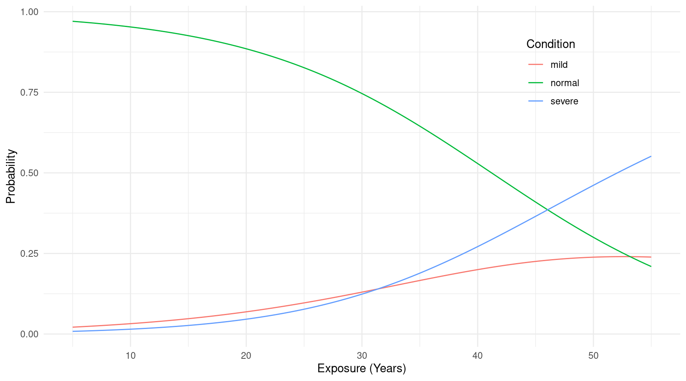
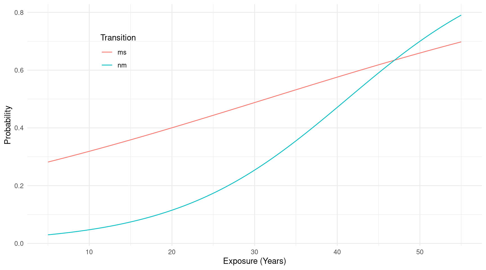

You can also download a PDF copy of this lecture.
In a discrete survival time model we model the hazard function \[
h(t) = P(T = t|T \ge t)
\] (i.e., the probability of a unit not “surviving” to time \(t+1\) given that it survived to
time \(t\)). This is closely related to
a family of models for ordered categorical response variables
that are conceptualized as a series of “stages” or “phases” of some
sort. But here instead we usually model \[
P(T > t|T \ge t)
\] (i.e., the probability that a unit will transition to stage
\(t+1\) given that it made it
to stage \(t\)). In terms of the hazard
function \[
P(T > t|T \ge t) = 1 - P(T = t|T \ge t) = 1 - h(t).
\] Warning: The VGAM package
includes a function called margeff which computes
instantaneous marginal effects for model objects created using the
vglm function. To avoid conflicts, use
trtools::margeff when using the margeff
function from the trtools package if the
VGAM package is loaded.
Example: The data frame pneumo from the
package VGAM contains aggregated data of pneumoconiosis
in coal miners.
library(VGAM)
print(pneumo) exposure.time normal mild severe
1 5.8 98 0 0
2 15.0 51 2 1
3 21.5 34 6 3
4 27.5 35 5 8
5 33.5 32 10 9
6 39.5 23 7 8
7 46.0 12 6 10
8 51.5 4 2 5This kind of model can also be estimated using the vglm
function from the VGAM package. With the original
aggregated data we would specify the model as follows. Note that the
order of the arguments to cbind is important. We want to
order them from lowest/first to highest/last.
m <- vglm(cbind(normal,mild,severe) ~ exposure.time,
family = cratio(link = "logitlink"), data = pneumo)
summary(m)
Call:
vglm(formula = cbind(normal, mild, severe) ~ exposure.time, family = cratio(link = "logitlink"),
data = pneumo)
Coefficients:
Estimate Std. Error z value Pr(>|z|)
(Intercept):1 -3.9664 0.4189 -9.47 < 2e-16 ***
(Intercept):2 -1.1133 0.7664 -1.45 0.146
exposure.time:1 0.0963 0.0124 7.79 6.9e-15 ***
exposure.time:2 0.0355 0.0206 1.72 0.085 .
---
Signif. codes: 0 '***' 0.001 '**' 0.01 '*' 0.05 '.' 0.1 ' ' 1
Names of linear predictors: logitlink(P[Y>1|Y>=1]), logitlink(P[Y>2|Y>=2])
Residual deviance: 13.29 on 12 degrees of freedom
Log-likelihood: -29.22 on 12 degrees of freedom
Number of Fisher scoring iterations: 6
Warning: Hauck-Donner effect detected in the following estimate(s):
'(Intercept):1'exp(cbind(coef(m), confint(m))) 2.5 % 97.5 %
(Intercept):1 0.01894 0.008334 0.04306
(Intercept):2 0.32846 0.073139 1.47508
exposure.time:1 1.10106 1.074695 1.12806
exposure.time:2 1.03611 0.995173 1.07872If the data are not aggregated (i.e., one observational unit per row) then the syntax is different. Here I disaggregate the data for demonstration.
library(tidyr)
pneumosingle <- pneumo %>% pivot_longer(c(normal,mild,severe),
names_to = "condition", values_to = "frequency") %>% uncount(frequency)
head(pneumosingle)# A tibble: 6 × 2
exposure.time condition
<dbl> <chr>
1 5.8 normal
2 5.8 normal
3 5.8 normal
4 5.8 normal
5 5.8 normal
6 5.8 normal tail(pneumosingle)# A tibble: 6 × 2
exposure.time condition
<dbl> <chr>
1 51.5 mild
2 51.5 severe
3 51.5 severe
4 51.5 severe
5 51.5 severe
6 51.5 severe An important step here is that we need to order the levels
of condition appropriately since we cannot order it in
cbind now.
pneumosingle$conditionf <- factor(pneumosingle$condition,
levels = c("normal","mild","severe"), ordered = TRUE)
levels(pneumosingle$conditionf) # correct order[1] "normal" "mild" "severe"We actually don’t need the ordered = TRUE here,
as the levels argument will imply the order, but it avoids
vglm throwing a warning.
Now we can specify the model as follows.
m <- vglm(conditionf ~ exposure.time,
family = cratio(link = "logitlink"), data = pneumosingle)
summary(m)
Call:
vglm(formula = conditionf ~ exposure.time, family = cratio(link = "logitlink"),
data = pneumosingle)
Coefficients:
Estimate Std. Error z value Pr(>|z|)
(Intercept):1 -3.9664 0.4189 -9.47 < 2e-16 ***
(Intercept):2 -1.1133 0.7664 -1.45 0.146
exposure.time:1 0.0963 0.0124 7.79 6.9e-15 ***
exposure.time:2 0.0355 0.0206 1.72 0.085 .
---
Signif. codes: 0 '***' 0.001 '**' 0.01 '*' 0.05 '.' 0.1 ' ' 1
Names of linear predictors: logitlink(P[Y>1|Y>=1]), logitlink(P[Y>2|Y>=2])
Residual deviance: 416.8 on 738 degrees of freedom
Log-likelihood: -208.4 on 738 degrees of freedom
Number of Fisher scoring iterations: 8
Warning: Hauck-Donner effect detected in the following estimate(s):
'(Intercept):1'exp(cbind(coef(m), confint(m))) 2.5 % 97.5 %
(Intercept):1 0.01894 0.008334 0.04306
(Intercept):2 0.32848 0.073145 1.47512
exposure.time:1 1.10106 1.074695 1.12806
exposure.time:2 1.03610 0.995172 1.07872Now suppose we want to plot the model. First we can compute the probability of each condition as a function of exposure.
d <- data.frame(exposure.time = seq(5, 55, length = 100))
d <- cbind(d, predict(m, newdata = d, type = "response"))
head(d) exposure.time normal mild severe
1 5.000 0.9703 0.02136 0.008379
2 5.505 0.9688 0.02228 0.008897
3 6.010 0.9673 0.02323 0.009445
4 6.515 0.9657 0.02423 0.010026
5 7.020 0.9641 0.02526 0.010642
6 7.525 0.9624 0.02633 0.011293We can use the pivot_longer function from the
tidyr package to reshape the data for plotting.
library(tidyr)
d <- d %>% pivot_longer(c(normal,mild,severe),
names_to = "condition", values_to = "probability")
head(d)# A tibble: 6 × 3
exposure.time condition probability
<dbl> <chr> <dbl>
1 5 normal 0.970
2 5 mild 0.0214
3 5 severe 0.00838
4 5.51 normal 0.969
5 5.51 mild 0.0223
6 5.51 severe 0.00890tail(d)# A tibble: 6 × 3
exposure.time condition probability
<dbl> <chr> <dbl>
1 54.5 normal 0.218
2 54.5 mild 0.239
3 54.5 severe 0.543
4 55 normal 0.209
5 55 mild 0.239
6 55 severe 0.552p <- ggplot(d, aes(x = exposure.time, y = probability, color = condition)) +
geom_line() + theme_minimal() +
labs(x = "Exposure (Years)", y = "Probability", color = "Condition") +
theme(legend.position = c(0.8,0.8))
plot(p) Alternatively we can plot the probability of passing from one condition to the next — i.e., \(P(Y>y|Y \ge y)\). But we need to compute those probabilities using the following fact. \[ P(Y > y|Y \ge y) = \frac{P(Y > y \text{ and } Y \ge y)}{P(Y \ge y)} = \frac{P(Y > y)}{P(Y \ge y)}. \] Note that this uses the definition of a conditional probability and the fact that if \(Y > y\) and \(Y \ge y\) then \(Y > y\). So \[ P(Y > 1|Y \ge 1) = \frac{P(Y > 1)}{P(Y \ge 1)} = \frac{P(Y=2) + P(Y=3)}{P(Y=1) + P(Y=2) + P(Y=3)}, \] and \[ P(Y > 2|Y \ge 2) = \frac{P(Y > 2)}{P(Y \ge 2)} = \frac{P(Y=3)}{P(Y=2) + P(Y=3)}. \] So we can compute the probability by adding together category probabilities.
d <- data.frame(exposure.time = seq(5, 55, length = 100))
d <- cbind(d, predict(m, newdata = d, type = "response"))
# probability of going from normal to mild -- i.e., P(Y > normal|Y >= normal)
d$nm <- with(d, (mild + severe) / (normal + mild + severe))
# probability of going from mild to severe -- i.e., P(Y > mild|Y >= mild)
d$ms <- with(d, severe / (mild + severe))
head(d) exposure.time normal mild severe nm ms
1 5.000 0.9703 0.02136 0.008379 0.02974 0.2817
2 5.505 0.9688 0.02228 0.008897 0.03118 0.2854
3 6.010 0.9673 0.02323 0.009445 0.03268 0.2890
4 6.515 0.9657 0.02423 0.010026 0.03425 0.2927
5 7.020 0.9641 0.02526 0.010642 0.03590 0.2964
6 7.525 0.9624 0.02633 0.011293 0.03762 0.3002Remove original category probabilities just for clarity, reshape the data, and plot.
d$normal <- NULL
d$mild <- NULL
d$severe <- NULL
d <- d %>% pivot_longer(c(nm,ms), names_to = "transition", values_to = "probability")
head(d)# A tibble: 6 × 3
exposure.time transition probability
<dbl> <chr> <dbl>
1 5 nm 0.0297
2 5 ms 0.282
3 5.51 nm 0.0312
4 5.51 ms 0.285
5 6.01 nm 0.0327
6 6.01 ms 0.289 tail(d)# A tibble: 6 × 3
exposure.time transition probability
<dbl> <chr> <dbl>
1 54.0 nm 0.774
2 54.0 ms 0.690
3 54.5 nm 0.782
4 54.5 ms 0.694
5 55 nm 0.791
6 55 ms 0.698p <- ggplot(d, aes(x = exposure.time, y = probability, color = transition)) +
geom_line() + theme_minimal() +
labs(x = "Exposure (Years)", y = "Probability", color = "Transition") +
theme(legend.position = c(0.2,0.8))
plot(p)
Example: Consider again the firstsex
data.
firstsex <- read.table("https://stats.idre.ucla.edu/stat/examples/alda/firstsex.csv",
sep = ",", header = TRUE)
firstsex$parent_trans <- factor(firstsex$pt,
levels = c(0,1), labels = c("no","yes"))The discrete survival model can be estimated using vglm
if the right-censoring is always at the highest observed time,
which it is here (grade 12). We need to create a new “grade” for those
cases where sex had not occurred for the first time in grade 12 (this
represents first sex after HS, if at all).
firstsex$time <- ifelse(firstsex$censor == 1, 13, firstsex$time)Probabilities of the form \(P(Y = y|Y \ge
y)\) can be modeled using vglm if we use the
sratio family. Here we do not need to worry about the
ordering of the response variable because it is implied by the ordering
of the grade numbers.
m <- vglm(time ~ parent_trans, data = firstsex,
family = sratio(link = "logitlink", parallel = TRUE))
summary(m)
Call:
vglm(formula = time ~ parent_trans, family = sratio(link = "logitlink",
parallel = TRUE), data = firstsex)
Coefficients:
Estimate Std. Error z value Pr(>|z|)
(Intercept):1 -2.994 0.318 -9.43 < 2e-16 ***
(Intercept):2 -3.700 0.420 -8.81 < 2e-16 ***
(Intercept):3 -2.281 0.273 -8.36 < 2e-16 ***
(Intercept):4 -1.823 0.258 -7.06 1.7e-12 ***
(Intercept):5 -1.654 0.269 -6.15 7.8e-10 ***
(Intercept):6 -1.179 0.270 -4.36 1.3e-05 ***
parent_transyes 0.874 0.218 4.02 5.9e-05 ***
---
Signif. codes: 0 '***' 0.001 '**' 0.01 '*' 0.05 '.' 0.1 ' ' 1
Number of linear predictors: 6
Names of linear predictors: logitlink(P[Y=1|Y>=1]), logitlink(P[Y=2|Y>=2]),
logitlink(P[Y=3|Y>=3]), logitlink(P[Y=4|Y>=4]), logitlink(P[Y=5|Y>=5]),
logitlink(P[Y=6|Y>=6])
Residual deviance: 634.7 on 1073 degrees of freedom
Log-likelihood: -317.3 on 1073 degrees of freedom
Number of Fisher scoring iterations: 5
Warning: Hauck-Donner effect detected in the following estimate(s):
'(Intercept):2'Note that specifying parallel = TRUE means that the
effect of pt is the same at each grade (i.e., no
interaction between grade and pt). Note that the odds ratio
for parenting transition (pt) is the same as what we
obtained in the previous lecture.
exp(cbind(coef(m), confint(m))) 2.5 % 97.5 %
(Intercept):1 0.05007 0.02687 0.09330
(Intercept):2 0.02472 0.01085 0.05631
(Intercept):3 0.10217 0.05986 0.17439
(Intercept):4 0.16161 0.09742 0.26807
(Intercept):5 0.19124 0.11288 0.32401
(Intercept):6 0.30757 0.18113 0.52228
parent_transyes 2.39556 1.56408 3.66906The other parameters are not the same because this model is
parameterized differently, using indicator variables for all grades
(called (Intercept) here for reasons we will see in the
next lecture) and then dropping the overall intercept term.
firstsex <- read.table("https://stats.idre.ucla.edu/stat/examples/alda/firstsex.csv",
sep = ",", header = TRUE)
firstsex$parent_trans <- factor(firstsex$pt,
levels = c(0,1), labels = c("no","yes"))
firstsex$status <- ifelse(firstsex$censor == 1, 0, 1)
firstsex <- trtools::dsurvbin(firstsex, "time", "status")
m <- glm(y ~ -1 + t + parent_trans,
family = binomial, data = firstsex)
summary(m)$coefficients Estimate Std. Error z value Pr(>|z|)
t7 -2.9943 0.3175 -9.431 4.072e-21
t8 -3.7001 0.4205 -8.800 1.369e-18
t9 -2.2811 0.2724 -8.374 5.547e-17
t10 -1.8226 0.2585 -7.052 1.767e-12
t11 -1.6542 0.2691 -6.147 7.888e-10
t12 -1.1791 0.2716 -4.341 1.415e-05
parent_transyes 0.8736 0.2174 4.018 5.859e-05exp(cbind(coef(m), confint(m))) 2.5 % 97.5 %
t7 0.05007 0.025882 0.09031
t8 0.02472 0.009913 0.05262
t9 0.10217 0.058475 0.17052
t10 0.16161 0.095433 0.26347
t11 0.19124 0.110430 0.31811
t12 0.30757 0.177404 0.51633
parent_transyes 2.39556 1.576605 3.70408Example: We can estimate the discrete survival model
for the cycles data as follows. Note that we do not need to
do anything for the censoring here because all observations censored at
12 are recorded at 13 (much like we did with the firstsex
data).
library(trtools)
m <- vglm(cycles ~ mother, data = cycles,
family = sratio(link = "logitlink", parallel = TRUE ~ 1 + mother))
summary(m)
Call:
vglm(formula = cycles ~ mother, family = sratio(link = "logitlink",
parallel = TRUE ~ 1 + mother), data = cycles)
Coefficients:
Estimate Std. Error z value Pr(>|z|)
(Intercept) -1.242 0.116 -10.7 < 2e-16 ***
mothernonsmoker 0.541 0.129 4.2 2.7e-05 ***
---
Signif. codes: 0 '***' 0.001 '**' 0.01 '*' 0.05 '.' 0.1 ' ' 1
Number of linear predictors: 12
Names of linear predictors: logitlink(P[Y=1|Y>=1]), logitlink(P[Y=2|Y>=2]),
logitlink(P[Y=3|Y>=3]), logitlink(P[Y=4|Y>=4]), logitlink(P[Y=5|Y>=5]),
logitlink(P[Y=6|Y>=6]), logitlink(P[Y=7|Y>=7]), logitlink(P[Y=8|Y>=8]),
logitlink(P[Y=9|Y>=9]), logitlink(P[Y=10|Y>=10]), logitlink(P[Y=11|Y>=11]),
logitlink(P[Y=12|Y>=12])
Residual deviance: 2258 on 7030 degrees of freedom
Log-likelihood: -1129 on 7030 degrees of freedom
Number of Fisher scoring iterations: 5
No Hauck-Donner effect found in any of the estimatesexp(cbind(coef(m), confint(m))) 2.5 % 97.5 %
(Intercept) 0.2888 0.2299 0.3628
mothernonsmoker 1.7185 1.3346 2.2128Same results as in the last lecture except confidence interval is
slightly different (the confidence interval here is a Wald confidence
interval as opposed to a profile likelihood interval). Note that the
argument parallel = TRUE ~ 1 + mother forces the parameters
to be the same across categories (i.e., cycles).